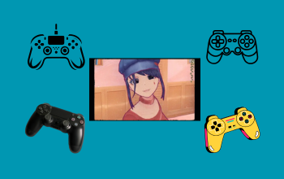
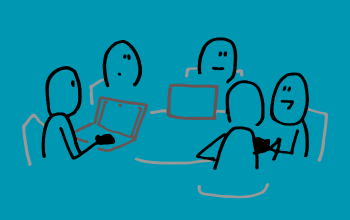
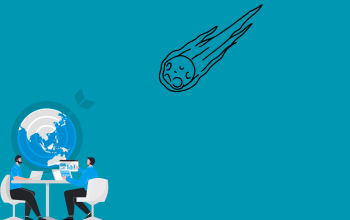
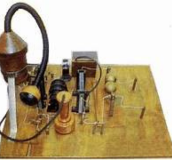
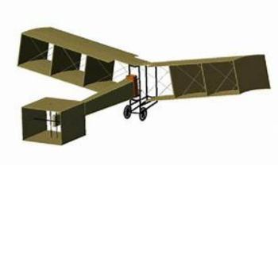
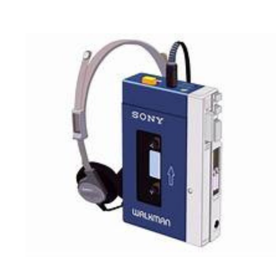
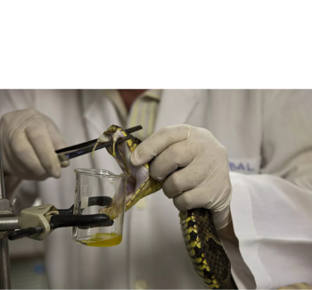

Nossos serviços

Jogos e diversão
Nosso site oferece alguns jogos educativos para que possa aprender se divertindo, venha e participe.
Quero detalhes
Materiais e conhecimento
Linhas temporais e gráficos personalizados para mais conhecimento e estudos com relação a globalização.
Quero detalhes
Tecnologias e empresas
Para quem deseja conhecer as Técnologias que impulsionaram a globalização.
Quero detalhes

Cases empresariais
Vamos saber sobre empresas que contribuiram para o impulso da globalização.
Quero detalhes

Impacto da tecnologia
Descobriremos sobre os impactos da tecnologia na cultura e negócios.
Quero detalhesInovações Brasileiras

Transmissão Radiofônica

Avião
Urna Eletrônica
Identificador de Chamadas

Walkman Brasileiro
